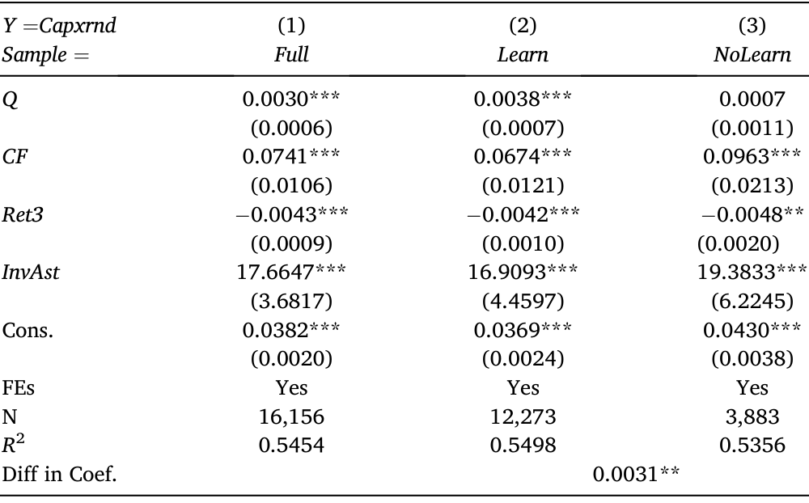
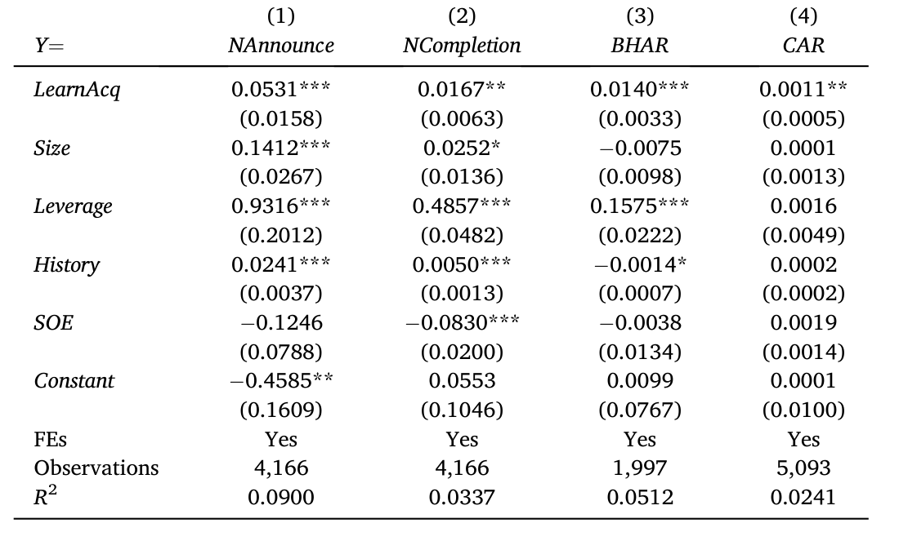
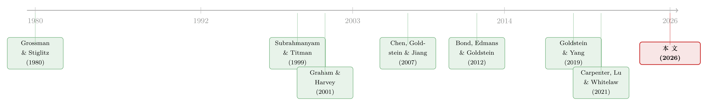

从马嘴里掏答案：直接问 4641 家公司，它们到底有没有在「看价格做决策」
本文读的是 Goldstein, Liu & Yang (2026, JFE)：作者联手中国证监会，对几乎全部 A 股上市公司做了两轮近乎「普查」的问卷，直接问它们「你看不看股价、为什么看、想从价格里学什么」。超过 90% 的公司说自己积极盯盘，最主要的两个理由是「从价格里学到了新信息」和「价格会影响再融资」。更关键的是，那些自称「会向市场学习」的公司，恰恰是理论上最该学的那批公司，而且它们的投资对股价更敏感——把「嘴上说的」和「手上做的」对上了号。
1 引言：一个吵了几十年的问题，和一个谁都没敢用的笨办法
股市到底是「实体经济的影子」，还是反过来——它会真真切切地改变企业的实体决策？这是金融学里吵了几十年、至今没有定论的一桩公案。
理论上，反馈的渠道是清楚的。Bond, Edmans & Goldstein (2012) 在那篇著名的综述里把它归成两条：一条叫 融资渠道 (financing channel)——公司在一级市场上发新股、发债融资，价格直接决定它能拿到多少钱、能上多少项目；另一条叫 学习渠道 (learning channel)——股价是无数交易者各自私有信号的「加权平均」，它聚合了散落在市场里、连管理层都不掌握的信息，于是理性的管理层会在拍板之前，先回头看一眼价格，借此更新自己的判断。后者就是所谓的 反馈效应 (feedback effect)。
融资渠道好懂，争议也小。真正吵得不可开交的是学习渠道。原因很简单：它在数据里几乎无法被直接识别。你想验证「管理层从价格里学到了东西」，前提是你得同时知道两件事——市场参与者的信息集、以及决策者自己的信息集。可这两样东西，恰恰都是经济学家观测不到的。Goldstein (2023) 总结道，过去几十年文献只能靠两类间接策略去「旁敲侧击」地推断它存在：要么看价格信息含量高的公司投资是不是对价格更敏感，要么看跨公司、跨市场的相关性。证据是积累了不少，但因为都是间接的，加上金融学界一个根深蒂固的先验——「企业内部人难道还不比外面的散户更懂自己公司？」——这条渠道始终笼罩在怀疑里。
于是，这篇文章做了一件听上去有点「笨」、却几乎没人敢做的事：既然信息集观测不到，那干脆直接去问当事人。
2 一场近乎「普查」的问卷
直接问当事人，这在金融实证里通常是个下下策。问卷研究的老毛病人人都懂：样本有选择性偏差（愿意回答的公司本就特殊）、受访者敷衍了事、或者根本不敢说真话。
但这篇文章的问卷有一个外人几乎复制不了的优势：它是和中国证监会 (China Securities Regulatory Commission, CSRC) 合作做的。
自 2017 年起，清华五道口金融学院和证监会每半年联合对全部 A 股公司做一次问卷。由监管者出面发放，结果就是——回收率接近 100%。作者在 2019 年 6 月和 2022 年 6 月各加了一组关于「市场实体效应」的问题：2019 年 3,628 家在沪深两市上市的公司里，3,626 家作答；2022 年 4,732 家里 4,641 家作答。
这一点值得停下来掂量一下。绝大多数问卷研究头疼的「选择性偏差」，在这里几乎被消灭了——因为样本就是总体。而且填问卷的不是实习生，Fig. 1 显示 2019 年有 11.4%（413 家）的填表人是董事长、董事、CEO 或 CFO 这类核心高管，其余也多是专门负责资本市场事务的团队。这种规模和深度的问卷，确实是「可遇不可求」。
问卷的核心是三道题，层层递进：
- 问题 I：你关不关注股市？关注谁的价格（自家／同行／指数）？——这是先确认公司到底在不在乎市场。
- 问题 II（选 A 或 C 者作答）：你为什么盯自家股价？给了五个选项，分别对应文献里提出的五条渠道：学习渠道（A：价格含有对实体投资有用的新信息）、融资渠道（B：价格影响再融资）、薪酬渠道（C）、监督渠道（D）、并购渠道（E）。
- 问题 III（仅 2022 年、且在 II 中选 A 者作答）：你具体想从价格里学什么？给了八个非互斥的信息维度。
3 他们在不在乎？以及，为什么在乎？
先看问题 I。两轮问卷里，都有超过 90% 的公司说自己既盯自家股价、也盯同行股价。这一步看似平淡，却先把一块地基夯实了：公司确实在乎市场。
接着，一个自然的问题是——他们在乎，是为了什么？这正是问题 II 要切开的。结果颇有意思：受访者勾选最多的两个理由，恰恰就是 Bond-Edmans-Goldstein 框架里那两条主渠道。在 2022 年，80.4% 的公司说它们关注股价是为了从中学到对实体投资决策有用的新信息（学习渠道），68.7% 说是因为价格会影响再融资（融资渠道）。剩下那三条——来自董事会和股东的压力、薪酬挂钩、防止被收购——得到的支持要少得多。2019 年的结果高度一致。
换句话说，当你把话筒直接递到企业嘴边，它们自己讲出来的故事，和理论家在黑板上推演出来的故事，基本对得上。
4 真正关键的一步：怎么证明「嘴上说的」不是噪声？
但真正关键的一步，不在于「公司说了什么」，而在于作者如何让这些回答变得可信。毕竟，问卷最致命的软肋就是：万一受访者只是随口一答呢？
作者的破解之道，是把「嘴上说的」和「身上带的、手上做的」一一对上号——如果回答只是噪声，它就不该和公司的客观特征、客观行为系统性地相关；可一旦它真的相关，而且相关的方向和理论预测严丝合缝，那这些回答就不再是噪声。文章为此发展了两组检验。
4.1 谁最该学，谁就最爱学
第一组检验问：哪类公司更可能自称「向市场学习」？理论给出的直觉很清晰——当公司的投资者更懂行、而管理层自己越不懂时，向价格学习的边际收益越大。
数据确认了这一点：投资者信息含量越高、管理层信息越少的公司，越倾向于报告自己在学习。analyst（分析师）这个变量则更微妙——分析师覆盖越多的公司，反而越少强调向市场学习。这乍看反直觉，却正好印证了 Chen, Goldstein & Jiang (2007) 的论断：分析师并不向市场注入新信息，他们只是把管理层已经知道的东西搬运给市场；既然搬运的是管理层自己的信息，管理层当然没什么可从里面再学的。此外，管理层学历越高、履历越丰富，也越倾向于学习——更有见识的人，更懂得利用市场这面镜子。
作者还借用文献里的三个价格信息含量 (price informativeness) 指标来做交叉验证，预测「自认价格有信息」的公司更会学习。三个指标里有两个给出了统计显著的结果；而且作者顺带得出一个有意思的副产品：在中国市场，1-R² 和 PriceDelay 比 AdjPIN 是更稳健的价格信息含量度量。
4.2 真金白银：投资对股价的敏感性
说一千道一万，最硬的证据还是钱往哪儿走。如果一家公司真的在向价格学习，那它的实体投资就该对股价更敏感。作者于是把样本切成两半——自称学习的 Learn 组、和不学习的 NoLearn 组——分别跑下面这条经典的投资回归（被解释变量 Capxrnd 是研发调整后的资本支出，核心解释变量是托宾 Q）：
$$ Capxrnd_{it} = \alpha + \beta\, Q_{it} + \gamma\, CF_{it} + \delta\, Ret3_{it} + \theta\, InvAst_{it} + \mathrm{FE} + \varepsilon_{it} $$
这里 β 就是「投资—股价敏感性」。如表 4 所示，结果干净得出奇：在 Learn 组里 β = 0.0038（标准误 0.0007，***）显著为正；而在 NoLearn 组里 β = 0.0007（标准误 0.0011）压根不显著；两组系数之差 0.0031（**）也显著。也就是说，只有那些嘴上说自己看价格的公司，才真的会跟着价格调投资。 这正是「言行一致」的关键一击。

Table 4
4.3 并购：学到的，用在了刀刃上
更妙的是问题 III 里的第 G 项——有些公司明确表示，它们想从价格里学的，是潜在并购机会的信息。作者据此把公司分成「学并购」和「不学并购」两组，跑回归（MA 取四个并购结果之一）：
$$ MA_i = a + b\, LearnAcq_i + c'\, Controls_i + \varepsilon_i $$
如表 6 所示，那些自称会从价格里学并购信息的公司（LearnAcq），后续发起了更多并购（对宣告次数 NAnnounce 的系数 0.0531，***）、也更常成功完成（NCompletion 系数 0.0167，**）。而且它们的并购回报更好：完成后 12 个月的买入持有超额收益 BHAR 系数 0.0140（***），宣告窗口（日 -1 到 +1）的累计超额收益 CAR 系数 0.0011（**）。

Table 6
这是一条很漂亮的逻辑闭环：在某个具体维度上声称「向价格学习」的公司，恰恰在这个具体维度上做了更多、做得更成、回报更高。 噪声是不会这么挑维度的。
4.4 停牌：一个聪明的反向验证
于是反转出现——作者还想到了一个中国市场独有的「自然实验」：停牌 (trading suspension)。A 股公司有权在不给出具体理由的情况下，自行让股票停牌一段时间。
这就提供了一个绝佳的「说到做到」检验：如果一家公司真心认为价格里含有对自己有价值的信息，它就不会愿意亲手掐断这个信号。结果正是如此——自称从价格中学习的公司，更不倾向于停牌；而那些声称盯价格主要是出于融资担忧的公司，反而更倾向于停牌，尤其是在股价大跌时（怕影响再融资，于是干脆「捂住」价格）。这与它们自己给出的理由完全自洽。
还有一个细节帮了大忙：国有企业 (SOEs) 在所有回归里都更少支持学习和融资假说。这很反直觉——人们本以为国企更会「迎合监管讨好上面」。但理论恰恰预测国企天然更不在乎市场，于是这个「更少迎合」的方向，反过来又削弱了「受访者说假话」的担忧。
5 他们到底想从价格里学什么？
这是本文最具开创性、却最容易被忽略的一块。过去的间接证据顶多能告诉你「管理层在学习」，却答不上来「他们在学什么」。问题 III 第一次用直接证据补上了这块空白。
在自称学习的公司里，被勾选最多的三个维度是：宏观与行业信息（90.2% 的公司认同）、政策与监管信息（86.3%）、以及公司相对竞争对手的竞争地位（84.9%）。再往后依次是资本成本（61.9%）、客户需求（59.5%）、技术（54.7%）、潜在并购（53.1%）。
这个排序其实暗合理论。Goldstein & Yang (2019) 论证过：市场在提供那些需要从众多来源聚合、且对公司而言是「外部」的信息上具有比较优势。宏观、政策、竞争格局，恰恰都是高度需要聚合的外部不确定性——这些维度排在最前，正合逻辑。倒是「客户需求」排得偏后，多少有点出人意料，这恰好为后续研究留了一个口子。
6 文献脉络
把这篇论文放回它所属的那条河流里看，会更清楚它的位置。
源头要追到 Grossman & Stiglitz (1980)——价格若完全有效，谁还有动力去搜集信息？这个悖论奠定了「价格里必然含有信息」的理论底座。随后 Subrahmanyam & Titman (1999) 等把视线引向「价格反过来影响实体决策」。真正把反馈效应做成实证主线的，是 Chen, Goldstein & Jiang (2007)——他们用价格信息含量解释投资—股价敏感性，成为此后所有间接识别策略的范本。Bond, Edmans & Goldstein (2012) 的综述则把整片文献整理成「融资」与「学习」两条渠道，而 Goldstein & Yang (2019) 进一步刻画了市场究竟在哪类信息上更有优势。与此并行，问卷方法在金融学里也自成一脉：从 Graham & Harvey (2001) 对资本预算与资本结构的开山之作，到 Choi & Robertson (2020)、Edmans, Gosling & Jenter (2023) 直接「从马嘴里」问出实践与理论的落差。

而本文，正坐落在这两条河的交汇处：它第一次用一份近乎无选择性偏差的全样本问卷，去直接验证那条最难识别的学习渠道，并第一次回答了「学什么」这个长期悬空的问题。考虑到 Carpenter, Lu & Whitelaw (2021) 已经论证过中国股市近年信息效率大幅提升，把这个问题放在中国来问，时机和场景都恰到好处。
（关于「金融市场如何反过来影响企业实体决策」这条更大的主线，也可参见《一万七千亿美元的「自由现金」，被花到哪里去了？》。）
7 评论与延伸（Q&A + 研究方向）
(a) 几个可能的疑问
Q：受访者「说自己在学习」，真的等于「在学习」吗？这不还是问卷的老问题？
单看回答确实不够。本文的可信度不来自回答本身，而来自回答与客观变量的系统性对应：自称学习的公司投资—股价敏感性显著更高（
Learn组β=0.0038***vsNoLearn组不显著），自称学并购的公司真的并购更多、回报更好，自称学习的公司更不愿停牌。噪声不会这样有规律地、分维度地对上号。
Q：学习渠道和融资渠道，会不会被受访者混为一谈？
作者在问卷设计上做了刻意区分。问题 II 的选项 A 明确说「用于实体投资的新信息」（学习），选项 B 说「影响再融资」（融资）。论文还专门讨论了问题 III 的「资本成本」（学习语境下）与问题 II-B（融资语境下）的区别：前者是「向价格学自己不知道的资本成本」，后者可能只是「我早有既定项目、只是来发股票筹钱」，二者概念不同。
Q：为什么分析师覆盖越多，公司反而越少说自己学习？这不奇怪吗？
不奇怪，反而是个好信号。按 Chen et al. (2007)，分析师不是新信息的生产者，而是管理层信息的搬运工——他们把内部人已知的东西传给市场。既然搬运的是管理层自己的信息，管理层自然没什么可再学的。这个反向关系恰好支持了「学习」的因果解读。
Q：在中国做的结论，能外推到美国吗？
要谨慎。中国市场散户占比高、信息效率与制度环境都不同，停牌这个验证更是 A 股独有。但论文给出的核心机制（投资者越懂、管理层越不懂则越该学）是普适的理论预测，且作者在在线附录里复现了 Chen et al. (2007) 的间接结果在中国成立、并主要由「自称学习」的子样本驱动——这增加了外部效度。
Q：「投资—股价敏感性更高」会不会只是因为 Learn 组公司本来就更好、更透明？
这是最该担心的内生性。作者控制了现金流
CF、滞后收益Ret3、资产周转InvAst及固定效应，但敏感性差异本质上仍是横截面的相关，不是随机分配的处理效应。把它读成「学习导致更高敏感性」的因果，需要保留一分谨慎——这也是问卷类证据的固有边界。
Q：国企「更少支持学习」这件事，为什么反而加分？
因为它和「受访者迎合监管」这一担忧背道而驰。若大家都在讨好上面，国企本该说得更动听；可它们偏偏说得更少。这一反向模式既符合「国企天然更不在乎市场」的理论，又削弱了「答案被粉饰」的疑虑。
(b) 几个可能的研究问题与提案
1. 债券市场有没有自己的「反馈效应」？
【经济故事】本文聚焦股价，但二级债券市场（尤其信用利差）同样聚合着大量关于违约风险、资本成本的私有信息。管理层在做发债、再融资、投资决策时，会不会也在「向信用利差学习」？这对理解信用市场的实体效应是一块空白。
【可行性】中。所需数据：TRACE 逐笔成交、债券利差、Compustat 投资变量；识别可借鉴 Chen et al. (2007) 的投资—利差敏感性框架。难点在于债券价格信息含量的度量比股票更脏（流动性差、报价稀疏），需谨慎构造。
2. 外资持有人是不是「学习渠道」里更值钱的那块信息源？
【经济故事】Gao & Xiao (2023) 指出管理层会从非本地投资者带入的信息中学习。沿这条线，外资（如通过陆股通进入 A 股、或外资持有美国公司债）往往掌握本地人没有的全球宏观与行业信息——而本文恰恰发现「宏观与行业」是公司最想学的维度。外资占比高的公司，是否投资—股价敏感性更高、并购回报更好？
【可行性】高。所需数据：陆股通持股明细、或 13F／TIC 外资持仓，配本文的问卷分组。识别可用沪深港通开通作为外资准入的准自然实验，做 DiD。这与我自己关心的「外资持有人」主线高度契合。
3. 停牌作为「掐断价格信号」的代价，能否量化到融资成本上？
【经济故事】本文发现「为融资而盯价」的公司更爱在大跌时停牌。那么反过来：频繁停牌是否抬高了这些公司后续的再融资成本、压低了信息效率？这能把「学习 vs 融资」两类动机的福利后果直接对比出来。
【可行性】高。所需数据：A 股停牌记录（CSMAR）、后续 SEO／债券发行定价、利差。识别可用停牌新规（监管对随意停牌的收紧）作为外生冲击，做事件研究或 DiD。
4. 「想学什么」会随宏观周期漂移吗？
【经济故事】2022 年问卷里 COVID 维度一度是热点。信息需求的维度排序很可能随宏观状态变化——危机时更想学宏观，繁荣时更想学竞争与并购。把多轮问卷拼成面板，可以刻画「企业信息需求」的动态。
【可行性】中。所需数据：清华五道口—证监会历轮问卷（需获取权限，且早期未必含问题 III）。难点是问卷题目跨轮不完全可比。
8 我的判断
这篇文章最大的贡献，是用一种近乎无选择性偏差的全样本问卷，把一条几十年来只能间接旁敲的渠道，第一次拿到了「当事人亲口承认 + 行为印证」的双重证据；尤其「学什么」这一维度，是过去间接推断完全够不着的盲区，本文实打实地填上了。把回答与投资敏感性、并购行为、停牌选择逐一对上号的这套「言行交叉验证」设计，也为今后所有问卷类金融研究立了一个值得效仿的标杆。
但我对识别仍保留两点谨慎。其一，所有「学习—行为」的对应本质上是横截面相关，不是随机处理；把 Learn 组更高的投资—股价敏感性读成因果，需要更外生的变异来支撑——停牌那一节是最接近因果的设计，可惜不在主表里。其二，问卷虽近乎普查，但回答的诚实度终究无法被完全证伪，国企「更少迎合」的旁证很巧妙，却仍是间接的。
后续我最想看到的，是把这套「直接问 + 行为验证」的思路搬到信用市场和外资持有人上：债券利差里聚合的信息是否同样被管理层用于学习，外资带来的全球信息是否正是企业最想从价格里学到的那块——这两个方向，本文都已经把门推开了一条缝。
参考文献
- Bond, P., Edmans, A., Goldstein, I. (2012). The real effects of financial markets. Annual Review of Financial Economics 4, 339–360.
- Carpenter, J.N., Lu, F., Whitelaw, R.F. (2021). The real value of China's stock market. Journal of Financial Economics 139(3), 679–696.
- Chen, Q., Goldstein, I., Jiang, W. (2007). Price informativeness and investment sensitivity to stock price. Review of Financial Studies 20(3), 619–650.
- Choi, J.J., Robertson, A.Z. (2020). What matters to individual investors? Evidence from the Horse's Mouth. Journal of Finance 75(4), 1965–2020.
- Edmans, A., Gosling, T., Jenter, D. (2023). CEO compensation: evidence from the field. Journal of Financial Economics 150(3), 103718.
- Gao, R., Xiao, X. (2023). News from afar: the information role of nonlocal investors in guiding investment decisions. Working paper.
- Goldstein, I. (2023). Information in financial markets and its real effects. Review of Finance 27(1), 1–32.
- Goldstein, I., Yang, L. (2019). Good disclosure, bad disclosure. Journal of Financial Economics 131(1), 118–138.
- Goldstein, I., Liu, B., Yang, L. (2026). Market feedback: Evidence from the horse's mouth. Journal of Financial Economics 180, 104255.
- Graham, J.R., Harvey, C.R. (2001). The theory and practice of corporate finance: evidence from the field. Journal of Financial Economics 60(2–3), 187–243.
- Grossman, S., Stiglitz, J. (1980). On the impossibility of informationally efficient markets. American Economic Review 70(3), 393–408.
- Subrahmanyam, A., Titman, S. (1999). The going-public decision and the development of financial markets. Journal of Finance 54(3), 1045–1082.